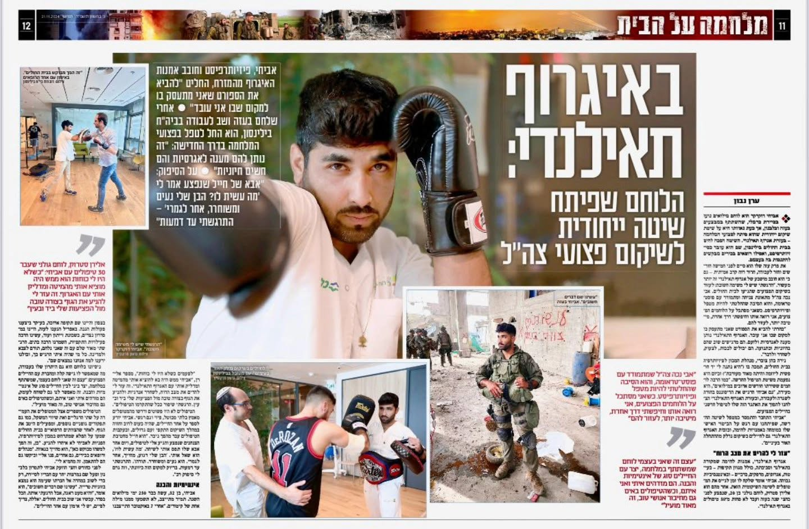
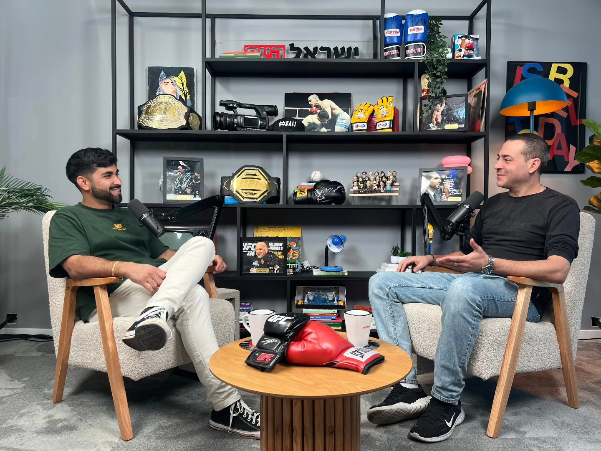

📰 כתבה
כתבה בישראל היום
הסיפור של TheraFist — השיטה שמשלבת פיזיותרפיה ואיגרוף תאילנדי בשיקום פצועי מלחמה — בכתבה מיוחדת במדור הבריאות של ישראל היום.
השיטה שמחברת בין איגרוף תאילנדי לשיקום פצועי מלחמה מעוררת עניין — בעיתונות, בפודקאסטים ובטלוויזיה. הנה כמה מהרגעים האלה.

הסיפור של TheraFist — השיטה שמשלבת פיזיותרפיה ואיגרוף תאילנדי בשיקום פצועי מלחמה — בכתבה מיוחדת במדור הבריאות של ישראל היום.

התשוקה לאגרוף תאילנדי שהפכה לטיפול בפצועי מלחמה — שיחה אישית ומרגשת על הדרך, השיטה והשליחות.
אביחי מתארח באולפן ומספר על שיטת TheraFist ועל שיקום פצועי מלחמה דרך תנועה ואיגרוף תאילנדי.
אני זמין להרצאות, ראיונות — וכמובן, לטיפולים. דברו איתי.